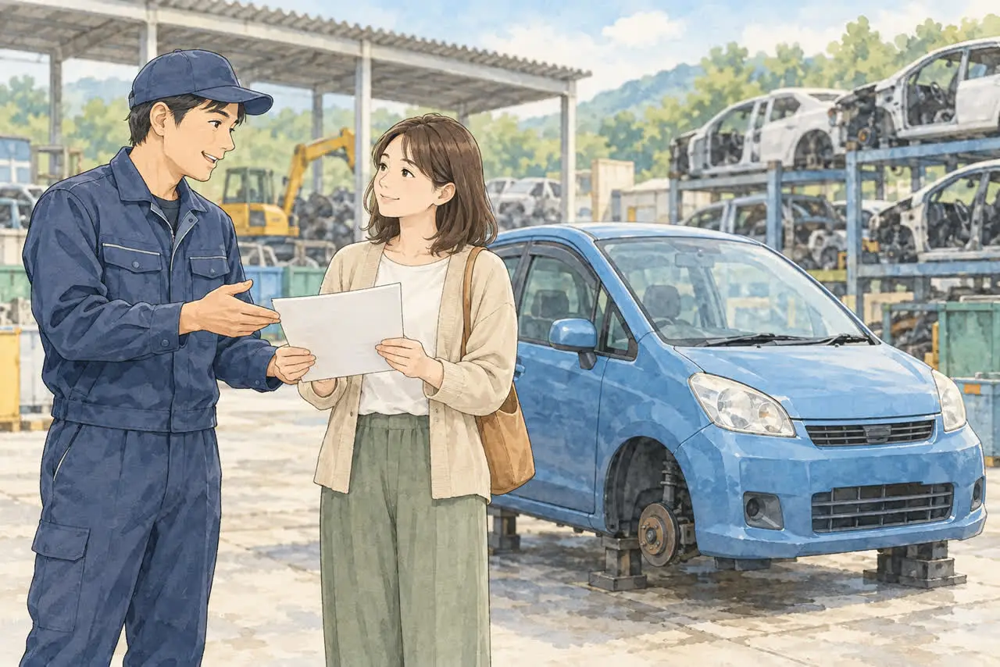
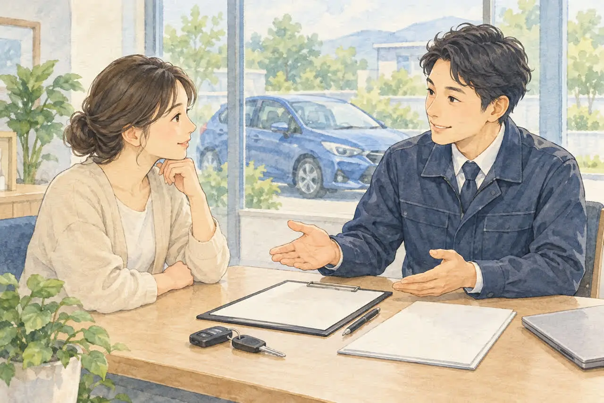

廃車の手続きで迷っている方へ
「一時抹消」と「永久抹消」の違いを
やさしく解説｜廃車はどちらを選ぶ？
公開
こんにちは、東京都足立区江北で自動車解体・廃車買取をしている「大崎商店 環七店」です。
「廃車には、一時抹消と永久抹消があると聞いたけれど、何が違うの？」
「解体しないで、とりあえず登録だけ止めたい」
「うちの車は、どちらにすればいい？」
廃車のご相談では、「一時抹消」と「永久抹消」という言葉の違いについて、よくご質問をいただきます。
「廃車にする」と聞くと、車を解体して、車そのものがなくなることだと思う方もいるかもしれません。しかし、廃車として引き取られた車が、すべて解体されるわけではありません。 一時抹消登録をしたあと、再び登録され、別の方に使われる場合もあります。「登録を止めること」と「車を解体すること」は、別のことです。
そのため、「廃車にしたい」と依頼するときは、車を手放したいのか、手元に保管して使用だけを中止したいのかも伝えると、必要な対応を確認しやすくなります。
結論からお伝えすると、一時抹消は車の使用を一時的に中止する手続き、永久抹消は適正に解体した車の登録を抹消する手続きです。先に一時抹消してから解体する場合は、その後に「解体届出」を行います。解体する予定があるかどうかだけでなく、すでに一時抹消しているかによっても、手続きが変わります。この記事は、普通車の手続きを中心に説明します。
この記事では、2つの違いと、どちらを選べばよいかを、やさしくご紹介します。後半では、足立区の大崎商店の場合もご紹介します。
① 一時抹消と永久抹消の違い

まず、2つの違いを、表で確認しましょう。
| 比較項目 | 一時抹消登録 | 永久抹消登録 |
|---|---|---|
| 目的 | 車の使用を一時中止する | 解体した車の登録を抹消する |
| 解体の必要性 | 解体前に申請できる | 解体と解体報告が必要 |
| 再び乗れる？ | 検査・再登録などの条件を満たせば可能 | 解体済みのため不可 |
| 申請時期 | 必要書類・条件が整ったあと | 必要書類がそろい、解体報告が済んだあと |
| 登録手数料 | 窓口500円／OSS450円 | 無料 |
※手数料は2026年4月1日改定後の金額です。上記は登録手数料で、解体・運搬・証明書の取得・代行などにかかる費用は別です。窓口申請では一時抹消の手数料を印紙で納めます。OSS申請の条件や納付方法は、公式案内をご確認ください。
※この表は普通車の比較です。申請先は使用の本拠の位置を管轄する運輸支局等です。軽自動車は軽自動車検査協会で、手続き名や書類が異なります。
② 一時抹消登録とは
一時抹消登録は、車の使用を、一時的にやめるときの手続きです。
- 車を解体しなくても、手続きができます
- 手続きをすると、ナンバープレートと車検証を返納します。公道を走れなくなります
- 再び使うときは、車検を受けて、あらためて登録します。登録すれば、ナンバーを付けて走れます
主な必要書類（普通車・窓口申請）
- 一時抹消登録申請書（本人申請時は所有者の実印。実印を押した委任状を添付する場合の押印の扱いは、申請案内に従います）
- 手数料納付書（窓口申請では500円の自動車検査登録印紙を貼ります）
- 所有者の印鑑登録証明書（申請日に発行から3か月以内のもの）
- 車検証
- ナンバープレート
- 代理人が申請する場合は、実印を押した委任状
車検証と今の住所・氏名が違う場合は、つながりを確認できる住民票などが、あわせて必要です。くわしくは車検証と今の住所・名前が違う場合の廃車手続きの記事をご覧ください。
一時抹消が向いている場合
- しばらく車に乗らない（海外赴任、長期の入院など）が、また乗る予定がある
- 車をすぐに解体せず、先に登録だけ止めたい（解体は、あとで行う）
※車を人に譲る場合は、通常、一時抹消ではなく、名義変更（移転登録）を行います。どちらが必要か迷う場合は、依頼先に確認してください。
③ 永久抹消登録とは

永久抹消登録は、車をリサイクル事業者に引き渡して、適正に解体したときの手続きです。
流れ
- 車を、リサイクル事業者に引き渡します
- 車が解体され、解体報告が行われます
- 解体報告記録がなされた日と、移動報告番号（リサイクル券などで確認できる番号）などを、申請書に記入して、運輸支局等に申請します
申請書には、解体報告記録がなされた日と、移動報告番号を記載します。そのため、解体が終わって、報告が済んだあとでないと、申請できません。
主な必要書類（普通車・窓口申請）
- 永久抹消登録申請書（本人申請時は所有者の実印。代理申請では実印を押した委任状などを用意します）
- 手数料納付書（手数料は無料です）
- 所有者の印鑑登録証明書（申請日に発行から3か月以内のもの）
- 車検証
- ナンバープレート
- 代理人が申請する場合は、所有者の実印を押した委任状
- 氏名・住所が変わっている場合は、つながりを確認できる書類
重量税の還付を受けたい場合は、解体に伴う手続きと同時に、還付の申請を行います。追加の書類が必要です。くわしくは、廃車にするとお金は戻ってくる？自動車税・重量税・自賠責の還付金の記事をご覧ください。
永久抹消の申請に使う移動報告番号は、リサイクル券などで確認できる番号です。リサイクル券をなくした場合の確認方法は、「リサイクル券をなくしたら？廃車できる？預託状況の確認方法と、代わりの書類」の記事をご覧ください。
④ 一時抹消のあとに、解体する場合は？
先に一時抹消をして、あとで車を解体した場合は、「永久抹消登録」ではなく、「解体届出」という手続きを行います。
- 車を、自動車リサイクル法に基づいて適正に解体したあと、届出をします
- 届出の手数料は、無料です（国土交通省の手数料一覧表で確認）
- 解体報告記録がなされた日と、移動報告番号（リサイクル券などで確認できる番号）などを記載して、提出します
- 一時抹消のときに受け取った、登録識別情報等通知書などが、必要になります
一時抹消後に所有者や住所・氏名が変わった場合は、登録識別情報等通知書の記録から変更の経緯を確認する書類などが必要になることがあります。手続きの組み合わせに応じて、依頼先へ確認してください。
⑤ どちらを選べばよい？
次の流れで、考えてみてください。
| あなたの状況 | 選ぶ手続き |
|---|---|
| 車を解体して、もう乗らない | 永久抹消登録 |
| また乗る予定がある | 一時抹消登録 |
| 先に登録だけ止めて、解体はあとにしたい | 一時抹消 → あとで解体届出 |
| 解体するかまだ決めていない | 依頼先に相談する |
迷ったときは、車の状態、これからの予定、お金（還付金・税金）を、依頼先に伝えて、相談してください。自動車税の還付は、一時抹消でも永久抹消でも、抹消登録をした月で決まります。 一方、重量税の還付は、解体に伴う手続きと同時に申請するものです。一時抹消だけでは、還付の対象になりません。
⑥ 手続きにかかる日数
一時抹消は、解体を待たずに申請できるので、書類がそろえば、早く進められます。永久抹消は、解体と解体報告が済んでからの申請になるため、解体の作業状況によって、日数が変わります。
窓口は、平日の日中だけです。くわしくは、廃車手続きはどれくらいで終わる？日数の目安と、早く終わらせるコツの記事をご覧ください。
一時抹消のあとに交付される書類（登録識別情報等通知書）の保管など、手続き後の書類は、「廃車したあとに届く書類・残す書類は？保管しておきたいものと、使い道」の記事をご覧ください。
一時抹消などの窓口の手続きを、自分でするか依頼先に頼むかは、「廃車は自分でできる？自分で手続きするか、業者に頼むかの選び方」の記事をご覧ください。
軽自動車の「一時使用中止」と「解体返納」の違いは、「軽自動車の「一時使用中止」と「解体返納」の違い」の記事でご紹介しています。
よくある質問
Q. 一時抹消をすれば、自動車税は止まりますか？
A. 抹消登録をした月で、課税が決まります。一時抹消でも、永久抹消でも、抹消登録をした翌月からその年度の3月までの分が、還付の対象になります（普通車の場合）。軽自動車税は、月割りの還付がありません。
Q. 一時抹消をした車は、また乗れますか？
A. 乗れます。車検を受けて、あらためて登録すれば、ナンバーを付けて走れます。ただし、再び登録するまでは、公道を走れません。
Q. 永久抹消をした車は、また乗れますか？
A. 乗れません。車が解体されているためです。
Q. 一時抹消をすれば、重量税が戻りますか？
A. 一時抹消だけでは、戻りません。重量税の還付は、車を解体して、解体に伴う手続きと同時に申請するものです。条件もあります。
Q. 解体してから、一時抹消をしてもいいですか？
A. まだ一時抹消していない車を適正に解体した場合は、永久抹消登録を行います。すでに一時抹消してから解体した場合は、解体届出です。解体済みなのに一時抹消だけで終えることのないよう、依頼先へ状態を伝えてください。
Q. 軽自動車でも、同じ違いがありますか？
A. 軽自動車は、窓口が軽自動車検査協会で、名前や書類が普通車と異なります。「解体返納」などの手続きがあります。準備は、「軽自動車の廃車に必要な書類・準備チェックリスト」の記事をご覧ください。
大崎商店の場合：どちらの手続きになる？

ここからは、足立区の大崎商店の場合をご紹介します。

大崎商店では、再び車として販売できる車も、解体が必要な車も、引き取り・買取のご相談を受け付けています。 お引き受けする車の状態や今後の扱いに応じて、一時抹消・永久抹消のどちらにも対応しています。
当店は車の引き取り・買取・解体を行うお店のため、車をお預かりせず、書類の手続きだけを代行するご依頼は受け付けていません。 「解体する車しか依頼できない」という意味ではありません。
当店での手続きの分け方
- 再び車として販売できる車：一時抹消登録を行い、次に使う方への再販売につなげます
- 再販売せず、解体する車：入谷店で適正に解体し、解体報告後に永久抹消登録を行います。先に一時抹消している場合は、解体届出を行います
- 解体する車でも、先に一時抹消にすることが多くあります：税金を止めたいとき、自賠責の返戻金を無駄にしたくないとき、すぐに解体できないときは、先にナンバーを返納して一時抹消（軽自動車は一時使用中止）を行うことが多くあります。
ここでいう「再販売できるか」は、車として再び使えるかという判断です。再販売が難しい車でも、部品や資源としての価値により買取価格がつく場合があります。 車として売れるかどうかをご自身で判断せず、まずはご相談ください。引き取りの対応範囲や条件は、所在地と車の状態を伺ってご案内します。
再販売も、自社での解体も対応できます
大崎商店では、再販売できる車は再販売し、解体する車は自社の入谷店で解体できます。 車の引き取りから、状態に応じた再販売・解体、必要な抹消登録まで、当店で対応をご案内します。
当店では、お客様に解体費用や廃車手続きの代行費用を別途請求していません。 抹消登録に必要な印紙代なども含めて対応します。引き取りの費用については、所在地と車の状態によって条件が異なるため、事前にご案内します。
他の依頼先を含めて費用を確認するときは、「引き取り料」「解体費用」「手続きの代行費用」など、何が含まれているかを確認すると、支払う金額がわかりやすくなります。
手続きの日数
- 車を解体して廃車にする場合は、解体の認可を受けた入谷店で解体し、永久抹消登録、または一時抹消済みの場合の解体届出を進めます。永久抹消は、入谷店の作業状況によって、日数が変わります
- 先に一時抹消の手続きを行う場合は、書類がそろっていれば、引き取りから原則1週間以内に対応します。早い場合は、当日か翌日です。窓口の受付が16時までのため、午後の引き取りは翌日以降になることがあります。祝日が続くときは、1週間以内をお約束できないことがあります
買取や引き取りのご案内の際に、お客様のお支払い・お受け取りの金額を、事前にお伝えします。
車検証（または自動車検査証記録事項）と、車種・状態・置いてある場所を、お電話でお伝えください。お客様の状況をうかがって、ご案内します。
大崎商店では、
- 廃車手続きの代行・解体の費用は無料
- 買取価格がつかない車も、環七店から片道約30分圏内は引き取り無料
- 買取価格がつく車は、圏外でも、所在地と車の状態によっては無料で引き取り（事前にご案内します）
- 車のお持ち込みは、どこからでも歓迎（基本は環七店。日時は、事前にお電話でご相談ください）
一時抹消・永久抹消のことも、大崎商店にご相談ください
電話で相談する 03-3854-4141メールで相談する（フォーム）ご来店の前に、お電話ください。引き取りなどで外出していることもあり、お電話いただければ、受け入れの可否や、ご案内できる日時をお伝えできます。
大崎商店 環七店
電話：03-3854-4141
〒123-0872
東京都足立区江北7丁目1−3
営業時間：月〜土 10:00〜18:00
休業日：日曜・祝日
環七沿い／舎人ライナー
西新井大師西駅
大崎商店 入谷店
電話：03-3899-2837
〒121-0836
東京都足立区入谷7丁目5−11
営業時間：月〜土 9:30〜17:30
休業日：日曜・祝日・第2土曜
引き取りやご相談のお電話は、環七店がスムーズです。お電話の際は、「一時抹消か永久抹消か迷っている」とお伝えください。車検証（または自動車検査証記録事項）をお手元にご用意いただくと、ご案内がスムーズです。
※掲載のイラストはAIで作成したイメージです。実際の店舗・役所の窓口を撮影したものではありません。
参考：国土交通省・2026年4月の登録手数料改定／国土交通省・登録・検査手数料一覧表（令和8年4月1日現在）／国土交通省・車を一時使用中止・解体・輸出するためには／国土交通省・車の使用を一時中止するために必要な書類／国土交通省・一時抹消登録後の届出について／国土交通省 東北運輸局・永久抹消登録